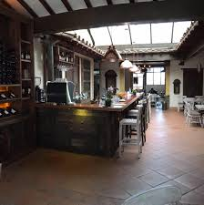

GUARNE

Que hacer?
- Ecoparque siente cueros
- Alto de la Cruz
- La Mayoría La_Mayoria
- Fuerte Ecológico y Palacio Nacional del Fique

Este ecoparque ofrece a sus visitantes un acercamiento con la naturaleza ya que cuenta con hospedajes en cabañas o zonas de camping donde también podrá realizar actividades de senderismo y aventura

Iniciamos en el parque de Girardota y terminamos en el alto de la cruz de Guarne, un sitio de peregrinación de la virgen Maria. La mayor parte del camino es de subida, y es espectacular, gran parte es un camino muy antiguo, vale la pena hacerla.
El Charco La Mayoría es un agradable lugar ubicado en la vereda La Honda, del municipio de Guarne. El sitio es ideal para acampar y disfrutar de un baño en sus cristalinas aguas frescas. Además de este charco que es uno de los más tradicionales del municipio, este municipio cuenta con otros destacados como La Truchera, en la vereda La Hondita y La California, en la vereda El Salado.
Donde comer?
Anticuario Restaurante Bar
Un lugar muy agradable para comer en familia, pareja o amigos. La atención es excelente y la comida muy rica. El menú del día es muy económico , completo y delicioso. Un restaurante muy lindo y acogedor en todo el parque de Guarne
La Terraza Restaurante Bar

Comida deliciosa excelente servicio, es un sitio muy agradable, amplio, con personas muy amables. Se siente muy bien estar allí
A comer al Trailer
Este restaurante sirve cocina colombiana. Disfruta las perfectamente elaboradas hamburguesas americanas, la tierna pizza y el casero laing que ofrece A Comer Al Trailer. Pide sus sorprendentes gofres. Degusta un insuperable café: no puedes dejar de hacerlo siempre que te pases por este lugar.